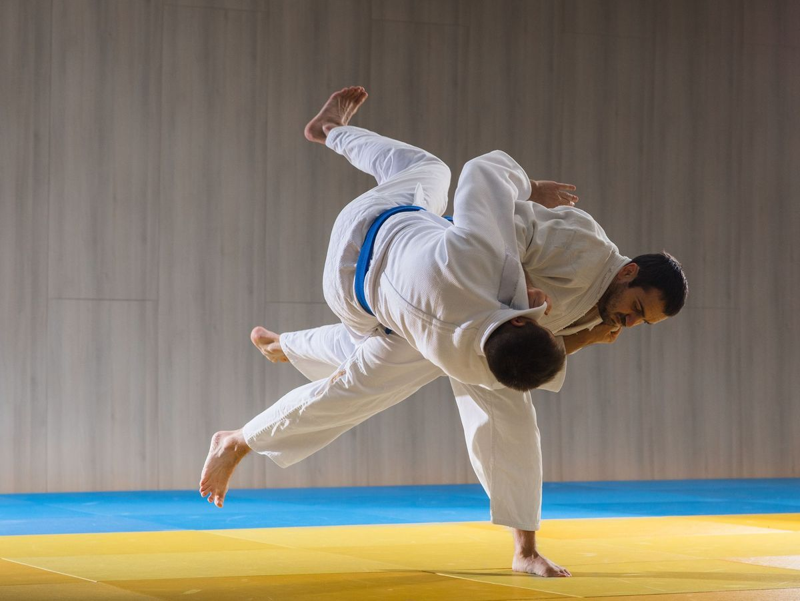
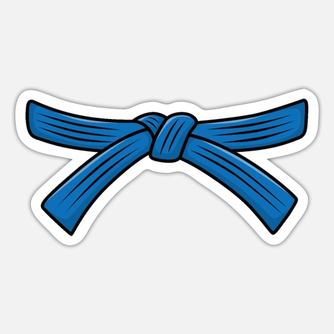
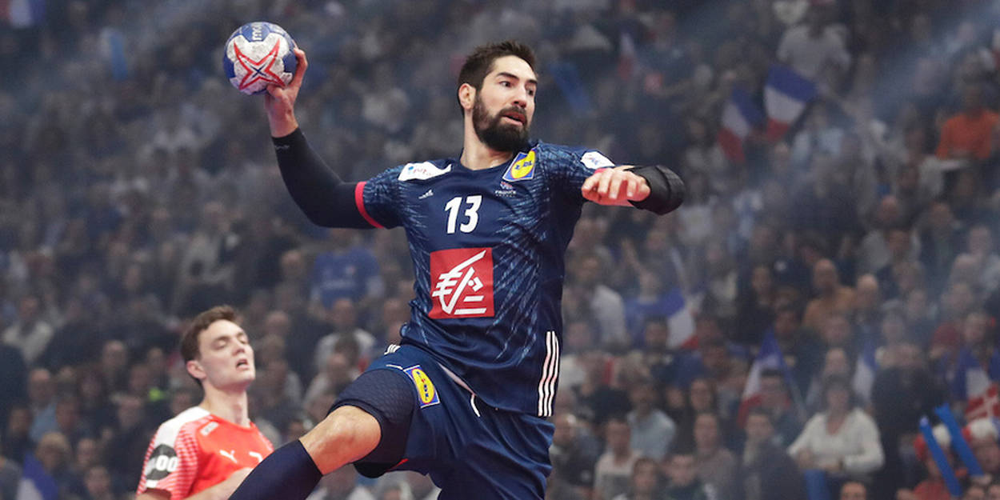
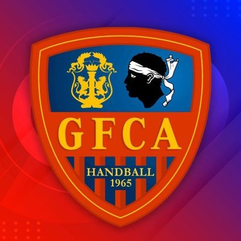

Le premier sport que j’ai pratiqué fut le Judo pendant 9 ans ce qui
m’a permis d’acquérir ma ceinture bleu. Dans ce sport de combat, les
compétences que j’ai acquise est la maitrise de sois, et l’humilité en
plus de l’art martial en lui même.
Le deuxième sport que j’ai pratiqué est le Handballl. Mon rôle était
goal et la plupart du temps j’était nommé capitaine dû à mon
ancienneté dans ce sport, 11 ans et cette année 12. J’ai pratiqué ce
sport à une échelle compétitive régionnal puis avec mon équipe en 2018
nous avons gagné la World-Cup catégorie U15. Cette pratique m’a
enseigné le travail d’équipe, l’entrainnement sérieux et régulier, et
la gestion de mes camarades sur le terrain.
J’ai appris égallement le rôle de coach et celui d’arbitre à
l’occasion d’évènement particulier, notemment avec le lycée.

Prise de judo

ceinture bleu

Tir de handball

GFCA Handball